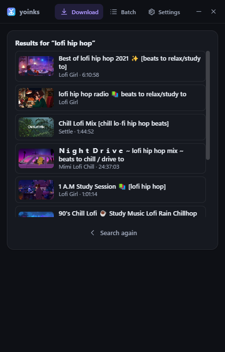
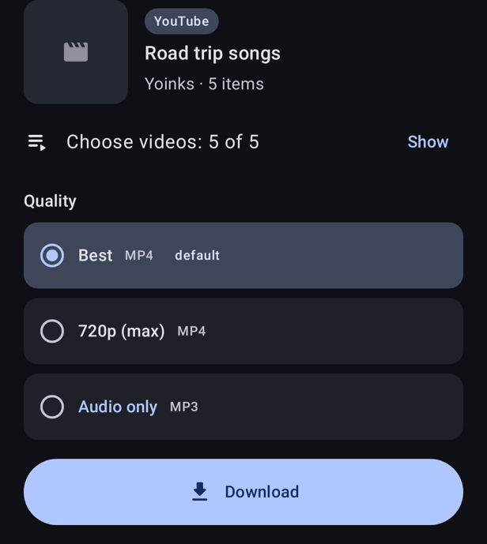

Save videos and music from almost anywhere
YouTube, TikTok, Instagram, SoundCloud, X and over 1,800 other sites, plus Spotify links. A Windows and Linux app, a browser extension and an Android app. Free, no ads, no tracking, no accounts.
Windows builds are not code-signed yet: if SmartScreen warns, choose More info, then Run anyway.
What it does
Paste, pick, done
Paste a link or type words to search, choose a quality or audio only, and it downloads. Presets and remembered qualities make it one click.
Buttons on the page
The extension puts a Yoink button next to Like and Share on YouTube, YouTube Music, SoundCloud, TikTok and more, and can grab every video on a page.
Spotify links
Yoinks finds each song on YouTube Music, shows how sure it is, and saves it with Spotify's title, artist, album and cover. Nothing is taken from Spotify.
Playlists and albums
Tick just the videos you want, keep them in their own folder, numbered, or split a long video by its chapters.
On your phone
Share a link from TikTok, Instagram or YouTube to Yoinks and it downloads in the background, with a quick tile for the link you just copied.
Private by design
No servers, no tracking. It only talks to the sites you download from and to GitHub for updates. How it stays safe.
Looks the way you want
Four styles (Clean, Playful, Neon, Classic), light or dark, your accent color and a floating navigation bar.
Convert your own files
On Windows and Linux, drop a video or audio file and turn it into MP3, M4A, FLAC, Opus or MP4.
Keeps itself working
yt-dlp and the apps update themselves, and a health check tells you what is wrong if something stops.
Screenshots




